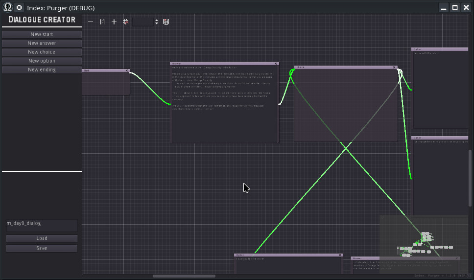
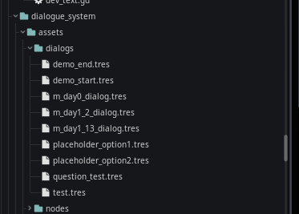

Module: dialogue_system
Documentation last edited: October 22, 2025 at 10:46 UTC
Description
Диалоговая система для этой игры. Не предоставляет какой-либо UI, но позволяет создавать диалоговые графы в сцене
"res://modules/dialogue_system/assets/scenes/dialog_creator.tscn"
. Вы также можете просто перейти в локацию
"dialog_editor"
, и это тоже даст вам доступ к редактору.
Редактор диалоговых графов

Простой интерфейс редактирования графов для создания диалогов. Интерфейс в целом простой, и это был один из первых инструментов, написанных для этой игры в начале разработки, когда я не очень понимал, как работать с UI. Поэтому в нём не хватает некоторого функционала И используются практики древнего ебучего ужаса. Но оно работает, так что...
Загрузка существующих файлов
Во-первых - чтобы загрузить существующий файл диалога, который был сохранён когда-то, вам нужно имя этого чёртова файла диалога. Все сохранённые файлы диалогов можно найти здесь:
"res://modules/dialogue_system/assets/dialogs/"

В текстовом поле над кнопкой "Load" вы просто вводите имя и нажимаете "Load". Когда закончите редактирование - нажмите "Save".
Порядок узлов
Хотя вы можете потенциально соединять что угодно с чем угодно по своему желанию, это может работать некорректно, так что имейте в виду следующую схему:
Start ->
Answer
Answer ->
Choice
Choice ->
Option -- или -- Multiple Options
Option ->
Answer
Option ->
Ending
Узлы могут использоваться для циклических соединений, т.е. вы можете задать вопрос и вернуться к узлу "Choice", который предоставил вам эту опцию.
Назначение узлов
Start - Начальная точка в диалоговом графе. Соединяется с Answer для начала разговора
Answer - Ответ другого человека в диалоге, не игрока. Соединяется с Choice для предоставления игроку вариантов
Choice - Ретрансляционный узел, соединяющий несколько Option
Option - Ответ игрока, который ведёт либо к Answer, либо к Ending
Ending - Завершение диалогового графа! Генерирует событие, которое может быть обработано в
Dialog Script
Диалоговый скрипт
Диалоговые скрипты - это особый вид скриптов, созданных для "реакции" на завершение диалога. Все они хранятся в
"res://locations/scenes/dialog_logic/"
.
# Шаблон логики диалога
extends DialogLogicBase
func on_end(event_name):
match event_name:
"ending0":
# ...
"ending1":
# ...
По сути, это запуск кода, который реагирует на указанное завершение. Имя завершения вводится в узле "Ending". Пожалуйста, учтите, что
имя файла скрипта должно соответствовать имени файла диалога для правильной работы.
Если ваш файл диалога называется
"m_day0_dialog"
, то имя файла вашего скрипта будет
"m_day0_dialog.gd"
. Также помните, что все скрипты логики диалогов наследуются от
DialogLogicBase
.
General Information
Root directories list
assets, docs, src
Nodes
graph_edit_connections
dialog_creator
start_node
option_node
ending_node
answer_node
choice_node
Classes
None
Resources
DialogTree
DialogTreeOption
DialogTreeAnswer
DialogTreeChoice
DialogTreeStart
DialogTreeEnding
Other Scripts
None